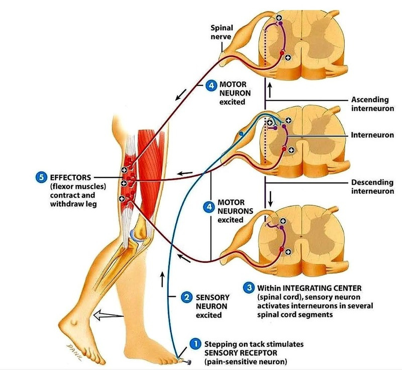
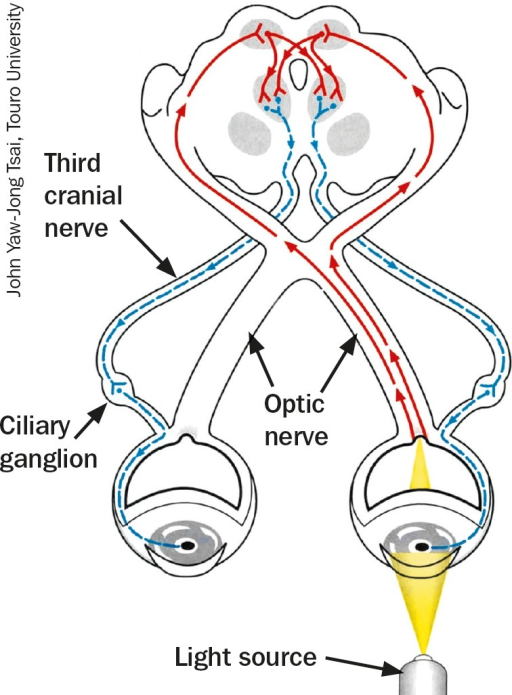
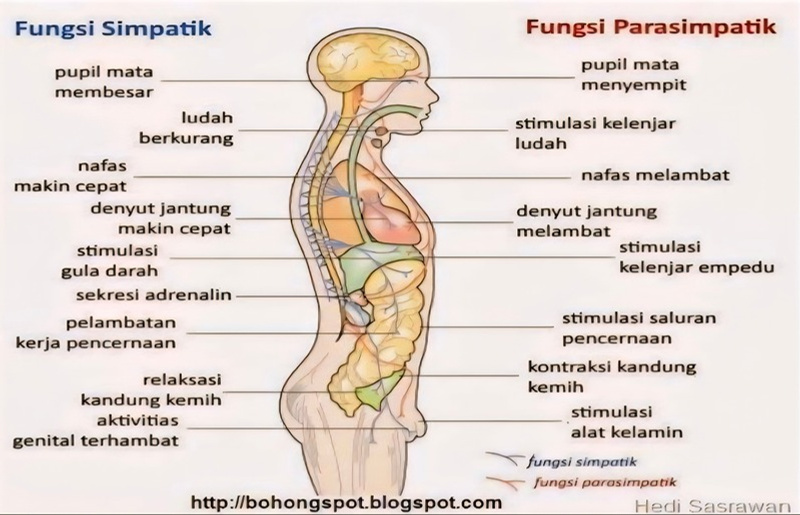
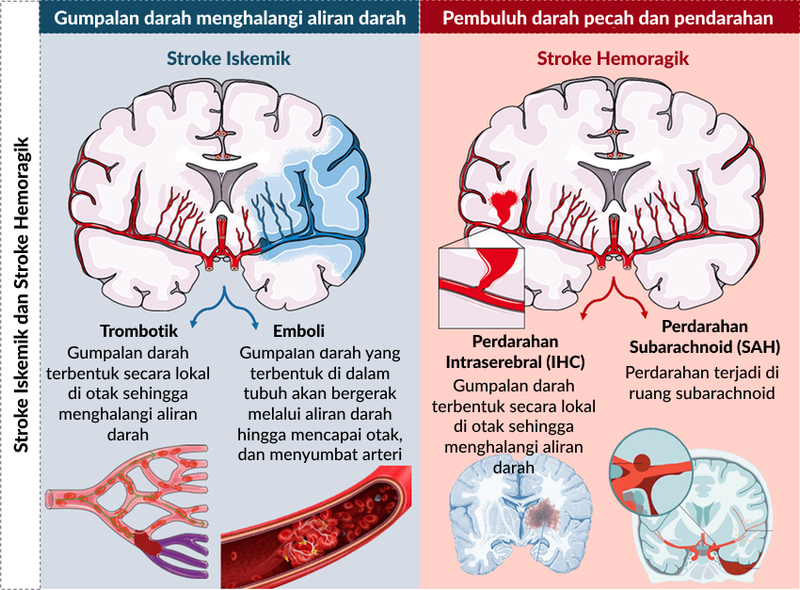
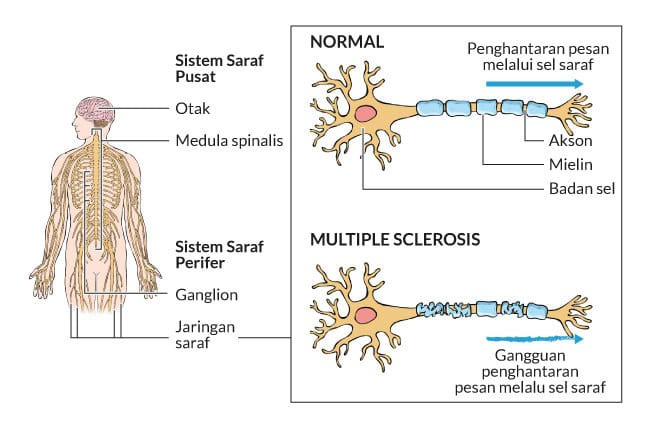
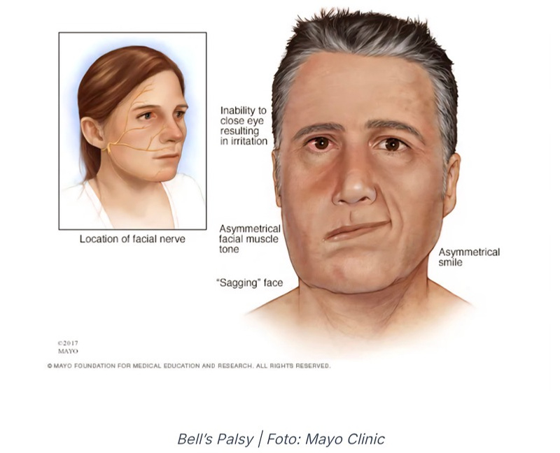
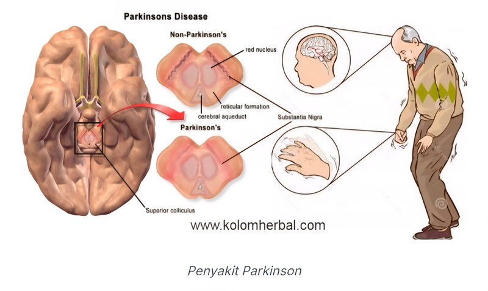

Pusat Metabolik
Badan sel (soma)
Pusat metabolik neuron dan memiliki ciri khas tidak memiliki sentriol.
Materi pembelajaran interaktif tentang neuron, potensial aksi, sinapsis, otak, sumsum tulang belakang, refleks, sistem saraf otonom, dan gangguan sistem saraf.
Kelompok 5
Mia Nurhalimah · Khalisa Latifah · Lina Agustin
Mengenal unit terkecil persarafan yang menjadi fondasi seluruh komunikasi sinyal tubuh.
Neuron adalah sel utama dalam sistem saraf yang berfungsi sebagai unit fungsional dasar untuk menerima, memproses, dan menghantarkan informasi dalam bentuk impuls listrik dan sinyal kimia.
Empat bagian utama sel saraf yang bekerja terintegrasi dari penerima rangsangan hingga pengirim impuls:
Pusat metabolik neuron dan memiliki ciri khas tidak memiliki sentriol.
Menerima sinyal atau rangsangan dari neuron lain lalu menghantarkannya menuju badan sel.
Serabut panjang yang mengirimkan impuls dari badan sel menuju neuron lain atau target seperti otot dan kelenjar.
Selaput berlemak seperti wax/lilin yang membungkus sebagian besar serabut saraf panjang dan membantu sinyal listrik berjalan sesuai jalurnya.
Membawa informasi dari reseptor indra menuju sistem saraf pusat, termasuk sentuhan, cahaya, suara, dan rasa sakit.
Penghubung neuron sensorik dan motorik di sistem saraf pusat; memproses serta mengintegrasikan informasi sebelum menghasilkan respons.
Mengirimkan perintah dari sistem saraf pusat menuju otot atau kelenjar untuk menghasilkan gerakan atau sekresi.
Bagian dalam neuron bermuatan negatif (-70 mV), dijaga aktif oleh pompa Na⁺/K⁺ yang memompa 3 Na⁺ keluar dan 2 K⁺ ke dalam sel dengan energi ATP.
Sinapsis adalah titik pertemuan fungsional antarneuron atau antara neuron dan sel target. Di antara membran terdapat celah sinaptik tempat informasi diteruskan sebagai sinyal kimia.
Impuls saraf sampai di terminal akson, kemudian kanal kalsium (Ca²⁺) terbuka.
Peran neurotransmitter
Neurotransmitter membawa pesan dari neuron presinaptik ke neuron postsinaptik. Contohnya asetilkolin, dopamin, serotonin, dan norepinefrin.
Gunakan tab di bawah untuk berpindah antarkomponen utama dan melihat ringkasan fungsinya.
Memiliki porsi otak terbesar, terbagi menjadi otak kanan dan kiri, bersifat kontralateral, dilapisi korteks serebral, serta memiliki lipatan Gyrus dan Sulcus.
Terletak di bagian bawah belakang otak besar, tepat di belakang batang otak. Berfungsi menyelaraskan dan mengkoordinasikan gerakan.
Menghubungkan otak besar (serebrum) dan sumsum tulang belakang (medula spinalis).
Terletak di antara otak besar dan batang otak, dengan empat bagian utama:
Lanjutan dari medulla oblongata yang memanjang di saluran tulang belakang, dilindungi tiga lapisan meninges dan memiliki cairan serebrospinal.
Tiga komponen struktural utama yang tampak pada potongan melintang medula spinalis:
Di bagian luar, terdiri dari serat saraf bermielin dan memuat traktus asenden serta desenden.
Di bagian dalam, berisi akumulasi badan sel neuron & interneuron, termasuk tanduk dorsal, ventral, dan lateral.
Saluran kecil di pusat medula spinalis yang berisi cairan serebrospinal.
Lengkung refleks adalah jalur saraf cepat dan otomatis untuk tindakan perlindungan tubuh, sedangkan sistem otonom mengatur respons tubuh pada kondisi aktif maupun istirahat.
Diproses langsung di sumsum tulang belakang dan mengontrol 31 pasang saraf spinal.

Diproses langsung di batang otak dan mengontrol 12 pasang saraf kranial pada area kepala, wajah, dan organ indra.


Mendominasi saat stres atau situasi darurat. Memacu kinerja organ vital seperti denyut jantung dan pernapasan, serta menghambat fungsi non-mendesak seperti pencernaan.
Mendominasi saat tubuh tenang dan beristirahat. Menenangkan laju kardiovaskular, melambatkan pernapasan, dan mengaktifkan kembali proses pencernaan.
Klik kartu untuk membaca ringkasan, lalu gunakan ilustrasi sebagai penguat visual.

01Gangguan fungsi otak akut akibat terhentinya pasokan darah ke otak karena penyumbatan atau pecahnya pembuluh darah, sehingga jaringan saraf kekurangan oksigen secara mendadak.

02Penyakit autoimun kronis pada sistem saraf pusat ketika sistem kekebalan tubuh merusak selubung mielin dan menghambat penghantaran impuls listrik saraf.

03Kelemahan atau kelumpuhan mendadak pada otot salah satu sisi wajah akibat peradangan atau penekanan pada Nervus Fasialis (Saraf Kranial VII).

04Gangguan degeneratif sistem saraf pusat akibat kemunduran sel saraf penghasil dopamin di substantia nigra, yang memengaruhi kontrol gerakan tubuh.
Empat pertanyaan singkat yang seluruh jawabannya berasal dari materi pada halaman ini.
Daftar berikut mempertahankan sumber yang tercantum pada bagian referensi materi Kelompok 5.
Akmal Subarjah, M., Muhammad Hasan, R., & Demexsi Rahmat, W. (2024). Sistem Saraf Otonom: Mengatur Aktivitas Tanpa Kesadaran. Journal Human Resource Strengthening, 1(1), 67–70.
Dinata, C. A., Safrita, Y. S., & Sastri, S. (2013). Gambaran Faktor Risiko dan Tipe Stroke pada Pasien Rawat Inap di Bagian Penyakit Dalam RSUD Kabupaten Solok Selatan Periode 1 Januari 2010 - 31 Juni 2012. Jurnal Kesehatan Andalas, 2(2), 57. https://doi.org/10.25077/jka.v2i2.119
Dobson, R., & Giovannoni, G. (2019). Multiple sclerosis - a review. European Journal of Neurology, 26(1), 27–40. https://doi.org/10.1111/ene.13819
Eva Zulisa, dkk. (2021). Anatomi dan Fisiologi Tubuh Manusia. penerbitzaini.com
Meutia, S., Utami, N., Rahmawati, S., & Himayani, R. (2021). Sistem Saraf Pusat dan Perifer. Medical Profession Journal of Lampung, 11(2), 306–311.
Muttaqin, A. (2020). Asuhan Keperawatan Klien dengan Gangguan Sistem Persarafan. Salemba Medika.
Ramadhani, K., Rachmawati Widyaningrum, Mp., & Mahasiswa Gizi Dan Kesehatan, B. (n.d.). Buku Ajar Dasar-Dasar Anatomi dan Fisiologi Tubuh Manusia.
Sari, N. R. (2021). Sistem Saraf. NUSAMEDIA.
Tranggono Yudo Utomo, dr, & dr Frisca Angreni, F. (n.d.). Dasar-Dasar Ilmu Saraf: Memahami Struktur dan Fungsi Otak Manusia.
Widodo, H. (2019). Memahami Sistem Saraf Manusia. Mutiara Aksara.
Yudawijaya & Pariama. (2024). Sistem Saraf Periferal: Struktur, Fungsi, dan Gangguan Klinis. Yayasan Putra Adi Dharma.
Yunita, A. S. (2023). Struktur Otak Manusia.
Zulkifli, Z., Lahmi, A., Dahlan, D., & Hakim, R. (2025). Mekanisme Kerja Otak dan Sistem Saraf: Perspektif Neurosains Pendidikan Islam. Menara Ilmu, 19(1), 118–130. https://doi.org/10.31869/mi.v19i1.6138